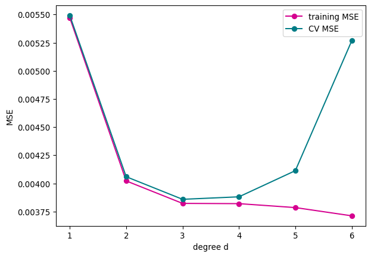
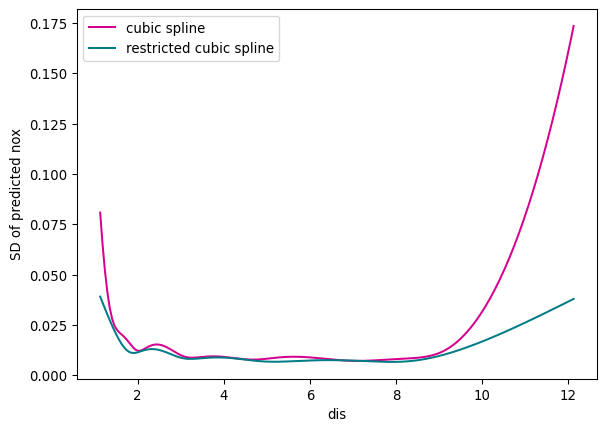

Both match the left piece evaluated at \(\xi\), whatever the values of \(\beta_0\) through \(\beta_4\). The same argument with \(\beta_4(0)^3 = 0\) shows that the two pieces meet at \(\xi\), so \(f\) itself is continuous as well.
The third derivatives are \(6\beta_3\) on the left and \(6\beta_3 + 6\beta_4\) on the right, so \(\beta_4\) determines the size of the jump in the third derivative at the knot.
2. A fitted spline by hand
(a) The indicator \(I(X \geq 1)\) is 0 for \(X < 1\), which makes \(b_2(X) = 0\) there, and it is 1 for \(X \geq 1\), which makes \(b_2(X) = (X - 1)^2\) there. Plugging in the estimates gives
\[\hat{f}(X) = \begin{cases} 1 + X & X < 1\\ 1 + X - 2(X - 1)^2 & X \geq 1\end{cases}\]
(b)
\(X\)
piece
\(\hat{f}(X)\)
\(-2\)
\(1 + (-2)\)
\(-1\)
\(-1\)
\(1 + (-1)\)
\(0\)
\(0\)
\(1 + 0\)
\(1\)
\(1\)
\(1 + 1 - 2(0)^2\)
\(2\)
\(1.5\)
\(1 + 1.5 - 2(0.5)^2\)
\(2\)
\(2\)
\(1 + 2 - 2(1)^2\)
\(1\)
Left of \(X = 1\) the curve is a straight line with intercept 1 and slope 1, from \((-2, -1)\) up to \((1, 2)\). Right of \(X = 1\) it is a downward opening parabola. Its slope, \(1 - 4(X - 1)\), is zero at \(X = 1.25\), so the curve keeps rising a little past the knot to a peak of \(\hat{f}(1.25) = 2.125\) and then falls to 1 at \(X = 2\). The line and the parabola meet at \((1, 2)\) without a corner. The plot in part c is the sketch.
The blank is np.where(X >= 1, (X - 1) ** 2, 0). The forms (X >= 1) * (X - 1) ** 2 and np.maximum(X - 1, 0) ** 2 give the same values. The printed values \(-1, 0, 1, 2, 2, 1\) match part b.
(d) The left piece has \(\hat{f}'(X) = 1\) and \(\hat{f}''(X) = 0\). The right piece has \(\hat{f}'(X) = 1 - 4(X - 1)\) and \(\hat{f}''(X) = -4\). At \(X = 1\):
The first derivatives match and the second derivatives do not. Both pieces also equal 2 at \(X = 1\), so \(\hat{f}\) is continuous with a continuous first derivative, and its second derivative jumps from 0 to \(-4\) at the knot.
Each piece is a polynomial of degree at most 2 (the line is a quadratic with a zero \(X^2\) coefficient), so \(\hat{f}\) is a quadratic spline, a degree 2 spline with one knot at \(X = 1\). A degree \(d\) spline has continuous derivatives up to order \(d - 1\), which for \(d = 2\) is the first derivative only, as found above.
poly.set_params(polynomialfeatures__degree=3)poly.fit(X_dis, y_nox)scaler = poly.named_steps["standardscaler"]lm = poly.named_steps["linearregression"]print("mean and SD of dis:", scaler.mean_, scaler.scale_)print("intercept:", lm.intercept_)print("coefficients:", lm.coef_)
mean and SD of dis: [3.79504269] [2.10362836]
intercept: 0.5105583740070609
coefficients: [-0.11335811 0.05244751 -0.0082385 ]
With the degree set to 3, .fit() estimates six numbers from the data. StandardScaler estimates the mean and standard deviation of dis (3.795 and 2.104), and LinearRegression estimates the intercept and the coefficients on the standardized \(x\), \(x^2\) and \(x^3\) (0.5106, \(-0.1134\), \(0.0524\) and \(-0.0082\)). We chose the degree of 3 beforehand, along with the other settings of the pipeline, such as standardizing dis before expanding it and include_bias=False.
The degree is a tuning parameter. You don’t want to choose it using least squares alone (without cross validation) because a higher degree (more flexible fit) will always be preferred (part c). You tune \(d\) by fitting the model at each degree, estimate the test error, and choose the degree with the smallest estimate. We estimate the test error using cross-validation on the ten folds of cv, either with a loop over cross_val_score as in part b or with GridSearchCV as in part d.
(b)
rows = []for d inrange(1, 7): poly.set_params(polynomialfeatures__degree=d) poly.fit(X_dis, y_nox)# MSE on the same 506 tracts the polynomial was fit to train_mse = np.mean((y_nox - poly.predict(X_dis)) **2)# MSE averaged over the ten held out folds of cv cv_mse =-cross_val_score( poly, X_dis, y_nox, cv=cv, scoring="neg_mean_squared_error" ).mean() rows.append({"degree": d, "training MSE": train_mse, "CV MSE": cv_mse})results = pd.DataFrame(rows)plt.plot(results["degree"], results["training MSE"], marker="o", color="#d5008f", label="training MSE")plt.plot(results["degree"], results["CV MSE"], marker="o", color="#007c86", label="CV MSE")plt.xlabel("degree d")plt.ylabel("MSE")plt.legend()plt.show()results.round(6)

degree
training MSE
CV MSE
0
1
0.005471
0.005492
1
2
0.004022
0.004059
2
3
0.003822
0.003859
3
4
0.003820
0.003881
4
5
0.003785
0.004113
5
6
0.003712
0.005267
The two blanks are np.mean((y_nox - poly.predict(X_dis)) ** 2) and -cross_val_score(poly, X_dis, y_nox, cv=cv, scoring="neg_mean_squared_error").mean(). mean_squared_error(y_nox, poly.predict(X_dis)) also works for the first blank if it is imported from sklearn.metrics. cross_val_score returns the negative MSE on each of the ten folds, so the minus sign and .mean() turn those scores into the CV MSE. It refits a copy of poly within each fold, so the fit to all 506 tracts on the line above does not leak into the CV MSE.
\(d\)
training MSE
CV MSE
1
0.005471
0.005492
2
0.004022
0.004059
3
0.003822
0.003859
4
0.003820
0.003881
5
0.003785
0.004113
6
0.003712
0.005267
(c) The training MSE is smallest at \(d = 6\) (0.003712), and the CV MSE is smallest at \(d = 3\) (0.003859).
The polynomials are nested. A degree \(d + 1\) polynomial with a zero coefficient on \(x^{d + 1}\) is a degree \(d\) polynomial, adding a degree can only lower the training MSE or leave it unchanged. Choosing \(d\) by training MSE will pick the largest degree tried, no matter what the data look like. Past \(d = 3\) the extra terms lower the training MSE only slightly, from 0.003822 to 0.003712, by over fitting to the noise in these 506 tracts.
Most of that increase in CV error comes from the ends of dis, where there aren’t many data points. Only 10 of the 506 tracts have dis above 9. In the fold that holds out the tract with the largest dis, 12.13, the degree 6 fit is trained on tracts with dis up to 10.71 only. Its squared error on that one tract is 0.76, which raises the MSE for that fold from about 0.004 to 0.0195.
GridSearchCV picks \(d = 3\) with a CV MSE of 0.003859, the same degree and the same value as part c. The CV MSEs for all six degrees match the table in part b because cv is a KFold with a fixed random_state and produces the same ten folds each time it is used.
(e)GridSearchCV does the following:
For each of the six degrees, it set polynomialfeatures__degree on a copy of poly.
For each of the ten folds of cv, it fit that copy (scaler, polynomial features and regression) to the other nine folds, (about 455 tracts) and computed the negative MSE on the held out tenth fold.
It averaged the ten fold scores into mean_test_score for that degree.
It chose the degree with the largest mean score, which is the smallest CV MSE (because it is negative), \(d = 3\), and stored it in best_params_.
Because refit=True by default, it fit one more pipeline with \(d = 3\) to all 506 tracts. That pipeline is best_estimator_.
That is \(6 \times 10 = 60\) fits for the search and one refit. The final model was fit to all 506 tracts. The CV MSE of 0.003859 came from the 10 fold models, each fit to about 455 tracts, so it estimates the test error of a model trained on slightly less data than best_estimator_ was.
4. Restricted cubic splines
dis = Boston["dis"]knots = dis.quantile([0.25, 0.5, 0.75]).to_numpy()lo, hi = dis.min(), dis.max()def cube_plus(x, k):return np.maximum(x - k, 0) **3def cubic_basis(x, knots): cols = {"x": x, "x^2": x **2, "x^3": x **3}for j, k inenumerate(knots): cols[f"c{j +1}"] = cube_plus(x, k)return pd.DataFrame(cols)def restricted_basis(x, knots, lo, hi): t = [lo, *knots, hi]# the largest interior knot and the upper boundary knot a, b = t[-2], t[-1] cols = {"x": x}for j, k inenumerate(t[:-2]): cols[f"r{j +1}"] = ( cube_plus(x, k)- cube_plus(x, a) * (b - k) / (b - a)+ cube_plus(x, b) * (a - k) / (b - a) )return pd.DataFrame(cols)
The cubic spline estimates 7 coefficients, the intercept, \(x\), \(x^2\), \(x^3\), and one truncated power term for each of the three knots. The restricted cubic spline estimates: the intercept, \(x\), and the three columns r1, r2 and r3.
The two blanks are cubic_fit.predict(cubic_basis(wide, knots)) and restricted_fit.predict(restricted_basis(wide, knots, lo, hi)).
dis
cubic spline
restricted cubic spline
0
\(-0.647\)
0.815
1.13
0.656
0.730
12.13
0.416
0.389
20
0.734
0.325
Below the smallest dis of 1.13, the cubic spline turns sharply downward and reaches \(-0.65\) at dis equal to 0. The restricted spline continues as a straight line with slope \(-0.075\) and rises to 0.82 at dis equal to 0, which is inside the range of the observed nox.
The restricted spline gives the more believable prediction at dis equal to 20.
(c)
rng = np.random.default_rng(363)dis_values = np.linspace(lo, hi, 200)cubic_preds = []restricted_preds = []for rep inrange(200): sample = rng.choice(len(Boston), size=100, replace=False) x_s, y_s = dis.iloc[sample], y_nox.iloc[sample] fit_c = LinearRegression().fit(cubic_basis(x_s, knots), y_s) fit_r = LinearRegression().fit(restricted_basis(x_s, knots, lo, hi), y_s) cubic_preds.append(fit_c.predict(cubic_basis(dis_values, knots))) restricted_preds.append( fit_r.predict(restricted_basis(dis_values, knots, lo, hi)) )# the spread of the 200 predictions at each value of discubic_sd = np.std(cubic_preds, axis=0)restricted_sd = np.std(restricted_preds, axis=0)plt.plot(dis_values, cubic_sd, color="#d5008f", label="cubic spline")plt.plot(dis_values, restricted_sd, color="#007c86", label="restricted cubic spline")plt.xlabel("dis")plt.ylabel("SD of predicted nox")plt.legend()plt.show()

The two blanks are restricted_basis(x_s, knots, lo, hi) and fit_r.predict(restricted_basis(dis_values, knots, lo, hi)).
In the middle of the data, from dis of about 2 to 9, the two standard deviations are nearly equal, between about 0.007 and 0.014. They differ most at the two ends, and most of all at the upper end. At dis equal to 12.13 the cubic spline’s standard deviation is 0.174, about 4.6 times the restricted spline’s 0.038. At the lower end, dis equal to 1.13, it is 0.081 against 0.039.
There is not much data in the ends. Only 10 of the 506 tracts have dis above 9, about 2 in each sample of 100, so the cubic pieces at the upper end are fit to a small number of tracts. The restricted spline uses a straight line at lo and hi, which is less problematic in these low data regions.
ISLP Figure 7.4 shows the same pattern on the Wage data. The pointwise confidence bands of the cubic spline flare out at the smallest and largest ages, while the bands of the natural cubic spline stay narrow there. Those bands are built from the standard deviation of the fit at each value of \(x\), about two standard deviations on either side, so a larger standard deviation at the ends is a wider band at the ends.
The restricted spline with five interior knots estimates \(5 + 2 = 7\) coefficients, the same as the cubic spline’s \(3 + 4 = 7\), so the two have the same flexibility. Comparing the cubic spline to the restricted spline with three knots mixes two differences, the linear tails and two fewer coefficients. The five knot version spends the two coefficients that the restriction saves on two more interior knots, so the only difference left is that the flexibility gets “spent” in the middle of the data instead of the tails.
The cubic spline has the smallest CV MSE, and the five knot restricted spline is next. The gap is 0.00006, about 1.5% of either value. The cubic spline does better on 7 of the 10 folds, but the fold MSEs themselves range from 0.0026 to 0.0054, so the gap is small next to the variation from fold to fold. All three splines do better than the cubic polynomial from Question 3, whose CV MSE on the same folds is 0.003859.
(e) Several answers are reasonable if they are justified with parts b to d. The restricted cubic spline with five interior knots is the best choice. Its CV MSE is within 0.00006 of the cubic spline’s, a which is smaller than the variation from fold to fold, so the two predict about equally well where most of the tracts are. At the ends of the data, its predictions vary less from sample to sample (part c), and past the ends it gives plausible predictions where the cubic spline gives impossible ones (part b).
The restricted spline with three knots is also a good choice since it is the simplest of the three, and its CV MSE is only 0.0001 above the cubic spline’s. A student who chooses the cubic spline for its lower CV MSE should say that the gap is small and that its predictions should not be used outside the range of the data.
Data from James, G., Witten, D., Hastie, T., Tibshirani, R., and Taylor, J. (2023). An Introduction to Statistical Learning with Applications in Python. Springer. Questions 1 to 3 are adapted from Chapter 7 exercises 1, 3 and 9, and question 4 from Section 7.4.3 and Figure 7.4.